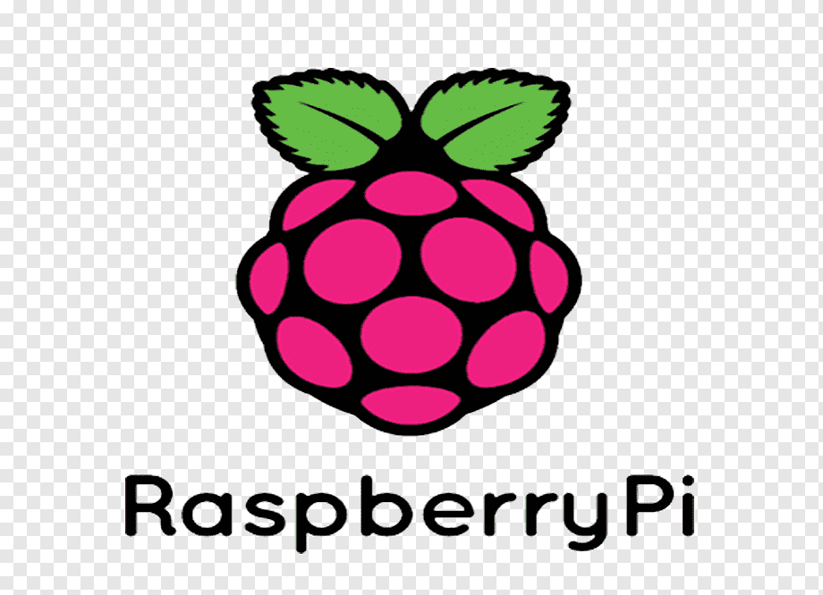

einige DIY Projekte zum selbst einrichten oder konstruieren empfehlen. Die Liste kann sich nach und nach erweitern.
DIY
Hier möchte ich
Raspberry Pi mit Pi-hole
Ich nutze einen Raspberry Pi im Heimnetzwerk, um Tracker, Werbung und den Zugriff auf dubiose Webseiten zu blockieren. Mit dem Dienst
Pi-hole können DNS-Anfragen jedes Netzwerkteilnehmers, die zu Domains auf eingepflegten Sperrlisten führen, blockiert werden.
Blockiert bedeutet in diesem Fall, dass die Antwort "Webseite nicht verfügbar" zurückgesendet wird. Dadurch bleiben Content-Boxen, die normalerweise Werbeanzeigen enthalten, leer.
Vorteile des Ganzen: Es wird Bandbreite eingespart, und die Recherche oder das Lesen von Nachrichten wird produktiver und fokussierter. Die Aufmerksamkeit wird weniger durch Ablenkungen durch blinkende Bilder und Videos am Bildschirmrand gefährdet.
Zur Einrichtung wird der Raspberry Pi klassisch mit Linux aufgesetzt, und Pi-hole wird installiert und konfiguriert. Danach wird er im Router als bevorzugter DNS-Server festgelegt (sowohl für IPv4 als auch IPv6).
Die lokale Benutzeroberfläche von Pi-hole sollte unbedingt als Lesezeichen gespeichert werden: "raspi-IP/admin/login.php".
